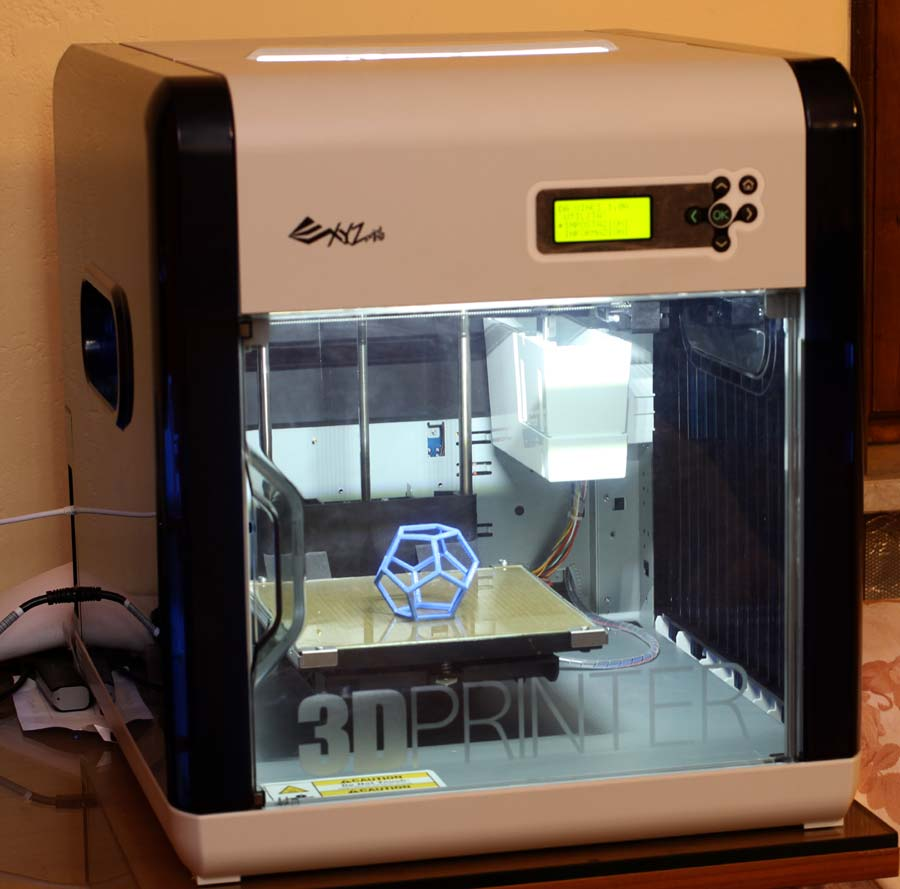
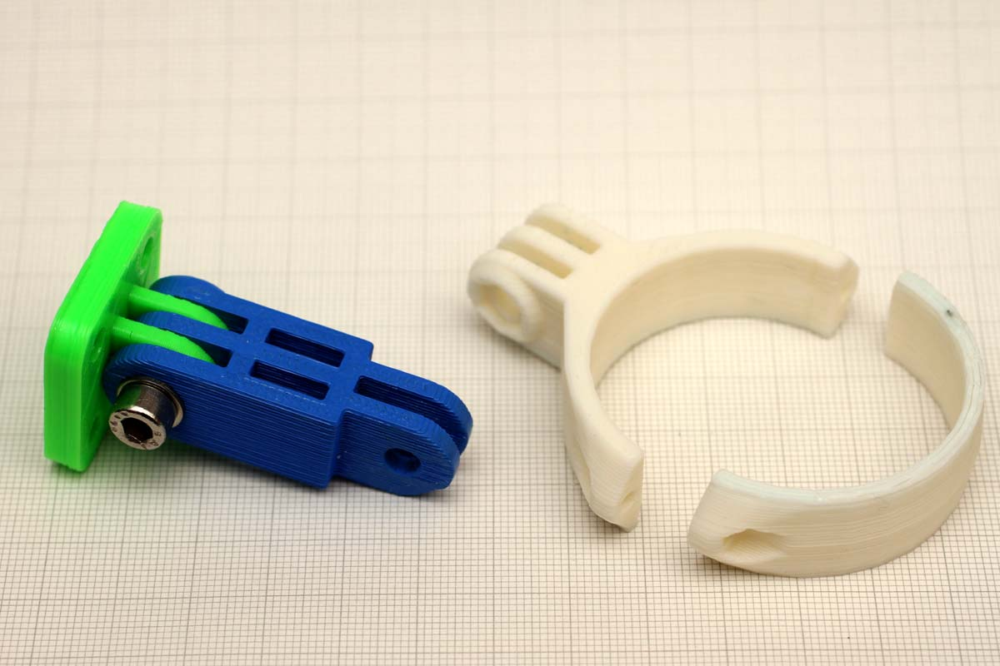
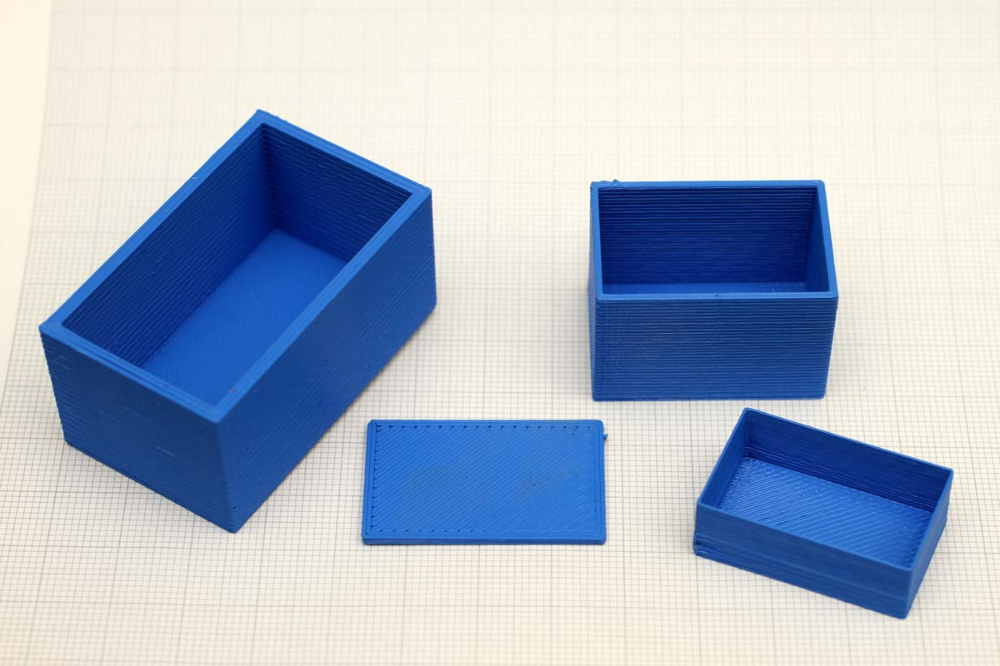
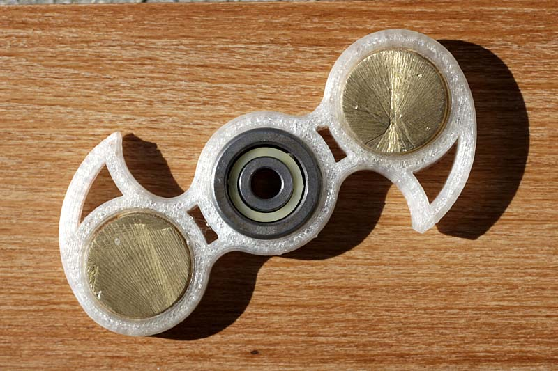
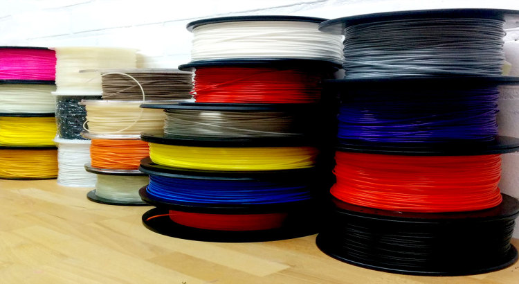
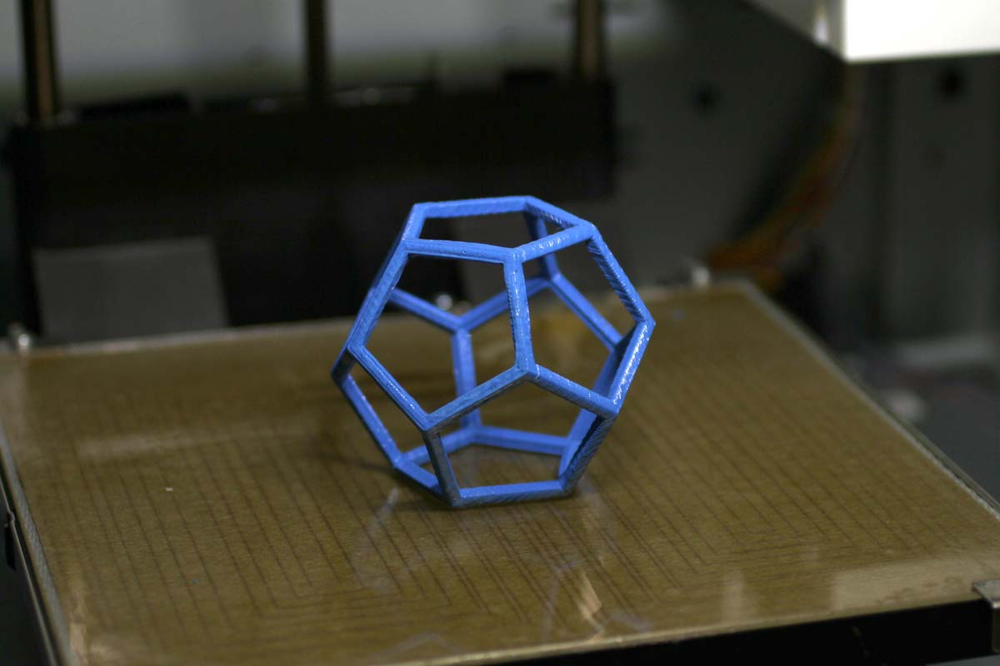
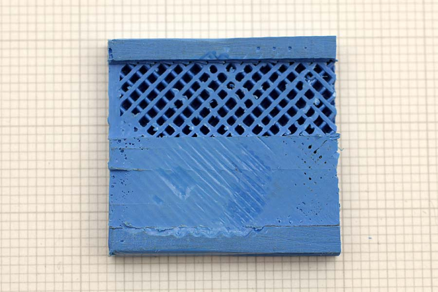

Foto & progetti
Printer 3D
XyzPrinting DaVinci 1.0A "Fai da te" di R.Chirio
Indice della pagina
2016/2017
E' utile una stampante 3D nella progettazione Elettronica?
Sicuramente può dare un ottimo contributo per realizzare parti hardware nelle costruzioni elettroniche. Contenitori dalle forme strane sono velocemente realizzabili, per esempio una custodia per Arduino, magari realizzato in ABS trasparente, per vedere led accesi sulla board, è facilmente e velocemente realizzabile in meno di un'ora...
Per chi fa riparazioni e restauri di apparecchiature e radio, può tornare molto utile stampare il supporto o la staffa in materiale isolante, oppure addirittura replicare manopole o coperchi introvabili.
Direi quasi indispensabile per chi fa modellismo, dove replicare due componenti uguali fatti a mano è quasi impossibile, con la printer 3D si possono stampare infiniti pezzi tutti uguali dallo stesso disegno.
Oppure perfezionare e finalizzare un componente difficile da disegnare, apportando piccole modifiche dopo le verifiche funzionali di stampa, in poche ore si può fare il miracolo...e fare il brevetto (chi lavora in progettazione auto mi comprende...)

3D Printer della XyzPrinting modello DaVinci 1.0A adatta per filo 1.75mm ABS e PLA
vedi pagina: http://eu.xyzprinting.com/eu_it/Eshop
Accessori per GoPro
Utilizzando i files presenti in rete è possibile stampare una gran varietà di oggetti utili. Una lunga lista di accessori per la GoPro è presente nel sito: http://www.stlfinder.com/

Alcune staffe e fissaggi realizzati in ABS, tutti con attacco standard GoPro.
Scatole per elettronica
Utilizzando i files presenti in rete è possibile stampare una gran varietà di oggetti utili. Una lunga lista di oggetti è presente nel sito: http://www.stlfinder.com/

Con un semplice CAD 3D è possibile disegnare in 3D molto velocemente, piccoli contenitori per utilizzo in elettronica, o altri semplici particolari.
Non serve installare il CAD, lo si può utilizzare direttamente on line: https://www.tinkercad.com/ basta registrarsi. Il formato di salvataggio dei files 3D è stl
Lista dei CAD 3D : http://www.3ders.org/3d-software/3d-software-list.html
F idget Spinner
Utilizzando i files presenti in rete è possibile stampare una gran varietà di oggetti utili. Una lunga lista di Fidget Spinner è presente nel sito: http://www.stlfinder.com/

Questo è stato realizzato in PLA, inserendo poi a pressione il cuscinetto da 22mm e i pesi satellite realizzati tagliandoli da una barra in ottone diam 20mm spessore 6mm, il tutto per la felicità dei ragazzi...
Materiali per il 3D termoplastici
Materiali filamento base per la DaVinci sono l'ABS e il PLA
- ABS indicato per applicazioni più durature e di utilizzo anche all'esterno, resiste meglio agli UV, temperatura di estrusione 210°, piano riscaldato a 100°
- PLA materiale con migliore resa, si presenta più lucido ed elastico, anche di buona robustezza, ma per la costituzione a base organica di mais, non è adatto per applicazioni esterne e presenza di umidità, in quanto è biodegradabile. Temperatura di estrusione 190°, piano riscaldato a 45°

Qua trovate una utile guida sui materiali ed altri suggerimenti per la stampa 3D: http://nicklievendag.com/filament-guide/
Utilizzo
Questa stampante XYZprinting, è molto facile da utilizzare, inoltre è già pronta all'utilizzo una volta tolta dall'imballo.
Molte 3D printer economiche vengono fornite smontate, ma non è così facile portare a fine un montaggio ben fatto....!!

- il piano riscaldato serve per mantenere morbido il pezzo, altrimenti il ritiro del materiale durante la fase di stampa, potrebbe in certe forme dare deformazioni visibili ed importanti.
- il punto di partenza per la stampa è il piatto in vetro, è necessario passare uno strato di colla adesiva (colla UHU) per favorire il fissaggio del primo strato, gli stati successivi si fonderanno tra loro. La colla si può facilmente pulire con un panno inumidito di alcool e l'utilizzo di una spatola di plastica (per non rigare il vetro).
Con materiale PLA non serve la colla, il vetro pulito è sufficiente come base di partenza da riscaldare a 40-60°
- Il tempo per realizzare un pezzo finito è molto in funzione alla dimensione e quindi alla quantità di filamento da fondere e posizionare. Ottimizzando il disegno CAD, con l'esperienza è possibile una sensibile riduzione di materiale senza pregiudicare la struttura e robustezza.
- Piccoli oggetti possono anche essere realizzati al pieno, ma strutture più grosse è meglio selezionare i vari parametri di riempimento per risparmiare materiale, senza ridurre la resistenza, per altezze superiore ai 3mm valori al 15% con struttura esagonale danni buoni valori di rigidità .

Sezionando un pezzo stampato, in questo caso di altezza 5mm, è possibile vedere la struttura interna riempimento 25%.
......
Printer 3D TRICKS & TIPS
Calibrazione
- La calibrazione del piatto di stampa, va fatta sovente, in quanto è importante per una buona partenza del pezzo da stampare. Non è una procedura lunga e difficile, il più delle volte se a posto non bisogna intervenire. Importante che il codolo di contatto sia perfettamente pulito in quanto un leggero strato di plastica evita il contatto tra i metalli e il motore continua a spingere fino a rompere o deformare il piatto.
Reset cartucce
- La cartuccia originale
contiene una eprom che viene aggiornata sul consumo in metri del
filamento, una cartrige nuova contiene 200m di filamento in ABS o PLA,
ad ogni stampata viene sottratto il quantitativo di materiale
utilizzato, quando esaurito il carico in metri della cartuccia
originale, la stampante si ferma chiedendo di sostituire la cartuccia.
Tutto bene, ma il costo cartuccia filamento originale è di oltre 50 euro
per un peso di 600g di filamento, il filamento non originale, disponibile
su Ebay o Amazon viene a costare 20-25 euro/kg pertanto è sicuramente
conveniente pensare di resettare la Eprom per utilizza del filamento non
originale. Con la Printer Da Vinci Pro 1.0 non è un problema in quanto è
possibile utilizzare filamenti non originali, come pure settare liberamente
i parametri di stampa.
Stampa di prova
Video
https://www.youtube.com/watch?v=evbADyU0Mmo
© Roberto Chirio: all rights reserved.